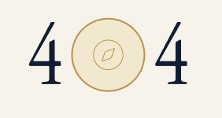

Không tìm thấy trang
Đường dẫn có thể đã thay đổi hoặc không còn tồn tại. Hãy tìm nhanh nội dung bạn cần.
<<<<<<< HEAD:pages/404.html
=======
>>>>>>> 49a844f8a9319b01d5624decc66c819623bb0bce:trang-404/404.html
Về trang chủ